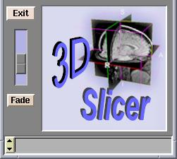
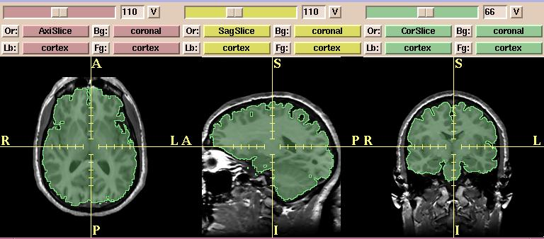

Use the Fade vertical slider (in the lower left of the Menu window) to fade from the images displayed in the background (Bg) layer to the images displayed in the foreground (Fg) layer. This is useful for checking alignment or coverage of a label map, for example.

In the example below, the images in the background are grayscale (non-brain) images and the images in the foreground are label map or segmented (brain) images.
